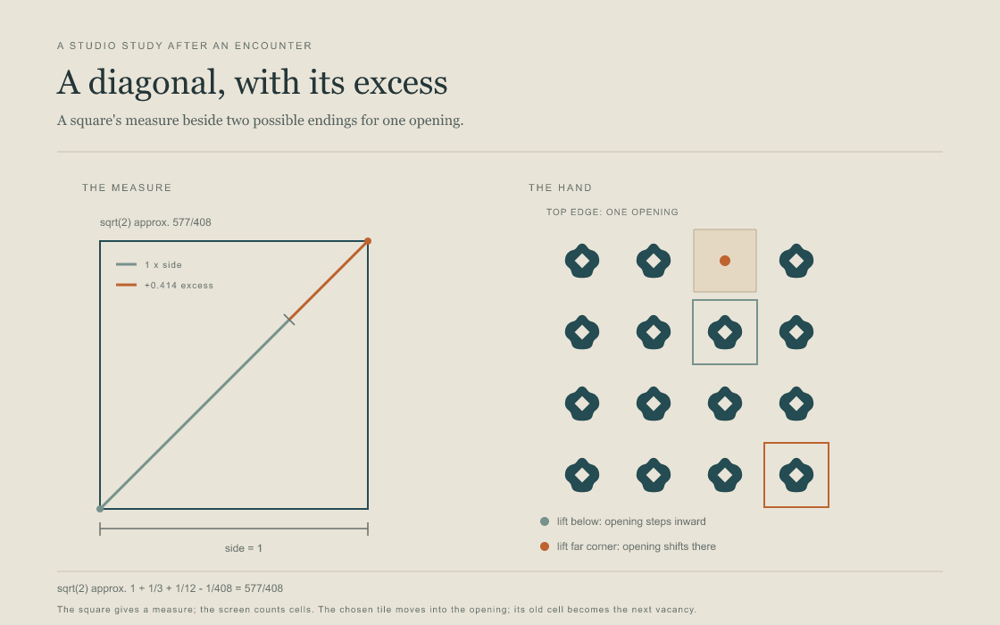
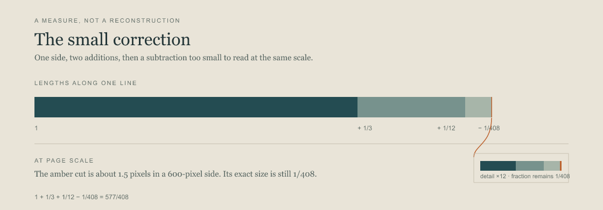

The Movable Vacancy
Lift one unit from the field. Carry it to the opening, and the opening travels to its old place.
Lift any tile, then place it in the pale opening. Its former cell becomes the new opening. Tap the dashed source cell to return the tile; reset to begin again.
For the border comparison, prepare that arrangement here. Then lift the tile below the opening for an inward step, or lift the far-corner tile. The setup counts as one move; reset restores the center opening. For a small return, prepare the four-step study and lift right, below, left, then above: the opening returns while four units change places.

The square carries a found approximation for its diagonal. The screen carries my rule for moving a vacancy. I bring them together as a question about measure and choice; the screen does not reconstruct the source geometry.
David W. Henderson identifies the prescription as Baudhāyana Śulbasūtra I.61–62; Sen–Bag numbers the same passage 2.12. The line first reached me under a Wikiquote heading for Vedāṅga Jyotiṣa, which does not establish its source. Henderson's account · numbering concordance.
The close Āpastamba rule appears at I.6 in direct text witnesses. Tiwary prints I.11–12 without naming an edition or concordance, so I leave that number open. Henderson's strip drawing is a possible reconstruction; this screen is mine.

The bar keeps the correction at its actual size: about one and a half pixels against a six-hundred-pixel side. The detail enlarges it for sight, while the fraction stays 1/408. This is a reading of the measure, not a reconstruction of how it was made.